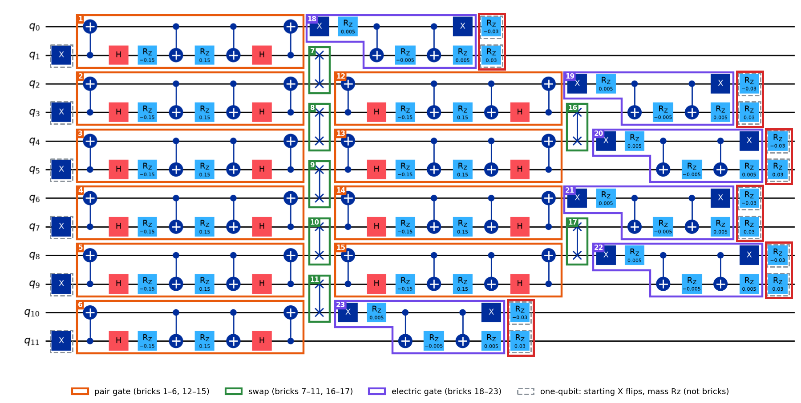
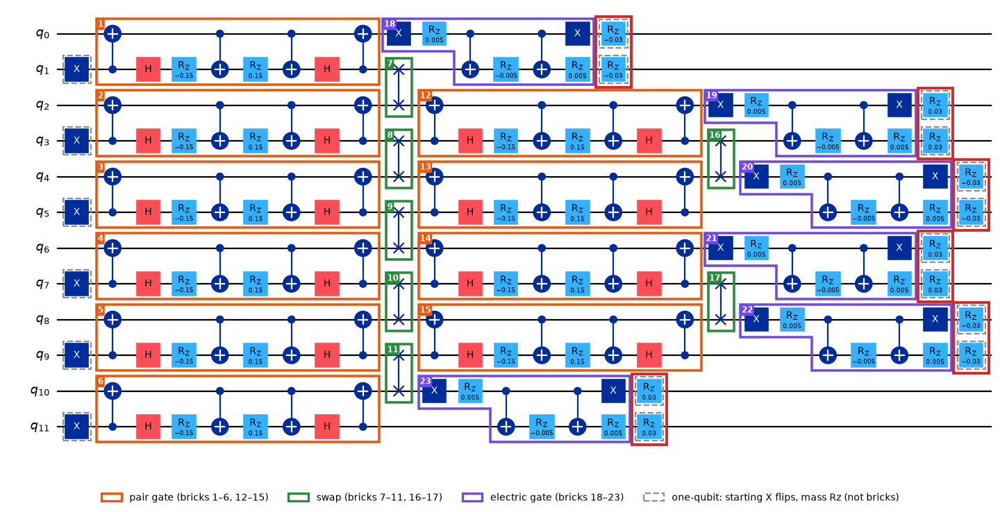

Learn · hadron circuit · brickwork, part 4
The small Rz turns at the end of each Trotter step, read off the old diagram, then worked on the same 4-qubit state as the earlier pages. States are written |q0 q1 q2 q3⟩.

Old circuit (brickwork_annotated_old.png). Outlined in red: the 12 mass Rz gates, one per qubit — easy to miss because each pair sits right after its electric gate.
Every qubit gets one Rz(±0.03) (mass 0.03). They come in the same pairs as the electric gates — each pair is one site: (q0,q1), (q2,q3), … (q10,q11). Like the electric gate, they only add phases: Rz(+m) gives a 1 the phase e+im/2 and a 0 the phase e−im/2; Rz(−m) the opposite.
| site | qubits | old diagram (wrong) | correct (newer files) |
|---|---|---|---|
| 0 | q0, q1 | −, + | −, − |
| 1 | q2, q3 | −, + | +, + |
| 2 | q4, q5 | −, + | −, − |
| 3 | q6, q7 | −, + | +, + |
| 4 | q8, q9 | −, + | −, − |
| 5 | q10, q11 | −, + | +, + |

Corrected circuit (brickwork_annotated.png, drawn by draw_brickwork.py): q0, q1 −0.03; q2, q3 +0.03; q4, q5 −0.03; … Everything else is unchanged.
Old: the sign flips every qubit — inside every site the two qubits get opposite signs, and every site looks the same. Correct: both qubits of a site share a sign, and the sign flips from site to site. In code: q % 2 → (q // 2) % 2. To fix the diagram, flip the signs on q1, q2, q5, q6, q9, q10.
The state after the electric gate (electric phases left out — they don't affect this point). (q0,q1) is one site, (q2,q3) the next:
cos²θ |0011⟩ − i sinθ cosθ |0110⟩ − i sinθ cosθ |1001⟩ − sin²θ |1100⟩
The rule for one qubit. Rz never changes a bit, it only multiplies by a phase — and the phase depends on the bit and on the sign of the turn:
Rz(+m) |0⟩ = e^(−im/2) |0⟩ Rz(+m) |1⟩ = e^(+im/2) |1⟩ Rz(−m) |0⟩ = e^(+im/2) |0⟩ Rz(−m) |1⟩ = e^(−im/2) |1⟩
The rule for a whole term. Each qubit gets its own Rz, so a term's phase is the product of its four qubits' phases. Example, old signs (−, +, −, +) on |0011⟩:
q0 = 0 under Rz(−m) → e^(+im/2) q1 = 0 under Rz(+m) → e^(−im/2) q2 = 1 under Rz(−m) → e^(−im/2) q3 = 1 under Rz(+m) → e^(+im/2) product → e^(0) = 1
Same rule, new signs (−, −, +, +) on |0011⟩: e+im/2 · e+im/2 · e+im/2 · e+im/2 = e+2im.
Doing this for all four terms:
| term | where the 1s are | old signs (−, +, −, +) | new signs (−, −, +, +) |
|---|---|---|---|
| |0011⟩ | both on site (q2 q3) | 1 | e+2im |
| |0110⟩ | one on each site | 1 | 1 |
| |1001⟩ | one on each site | 1 | 1 |
| |1100⟩ | both on site (q0 q1) | 1 | e−2im |
Checked by computer.